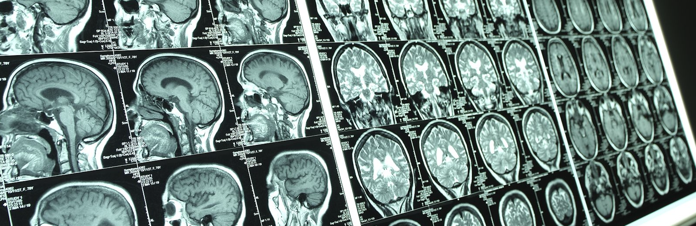

Introduction to MRI
1. MRI Basics
Atoms are made up of a nucleus and a shell of electrons. Inside the nucleus, there are protons, which have a positive electrical charge. These protons are constantly spinning around an axis, which creates a spin (see figure).
Because protons are moving electrical charges, they generate an electrical current. This current creates a magnetic field, making each proton act like a tiny bar magnet with its own magnetic field.
When protons are placed in an MRI scanner, they align with the external magnetic field. There are two ways they can align:
- Parallel to the magnetic field (lower energy state)
- Anti-parallel to the magnetic field (higher energy state)
The protons also precess (spin) along the magnetic field lines, similar to how a spinning top behaves under Earth's gravity.
When a person is inside the MRI machine, a strong magnetic field aligns the protons in their body. If we send a radio-frequency (RF) pulse at the same frequency as the protons' precessing frequency, two things happen:
- Longitudinal Magnetization Decreases: More protons align anti-parallel, canceling out some of the parallel protons.
- Transversal Magnetization Forms: The RF pulse synchronizes the protons, causing them to precess together.
Key Terms in MRI:
- Gradients: Gradient magnets are used to spatially encode the signals received from the protons, allowing for the construction of an image.
- Proton Resonance: Hydrogen protons in the body align with a magnetic field and then resonate when exposed to radiofrequency pulses (RF).
- Resonance: This phenomenon occurs when the RF pulse matches the protons' frequency, allowing them to absorb energy from the radio waves. This is where the term "resonance" in "magnetic resonance" comes from.
- T1 (Longitudinal Relaxation Rate): Influenced by the tissue's composition and structure, T1 varies with magnetic field strength and is longer in stronger fields. T1 relaxation is slower than T2 relaxation.
- T2 (Transversal Relaxation Rate): Occurs when protons get out of sync due to irregularities in the magnetic field or the tissue's local magnetic fields.
Types of MRI Sequences:
- T1-Weighted Imaging: Highlights fat and provides clear images of the brain's anatomy.
- T2-Weighted Imaging: Highlights fluid and is useful for detecting edema and inflammation.
- FLAIR (Fluid Attenuated Inversion Recovery): Suppresses fluids, enhancing the visibility of lesions.
For more information and images about the MRI sequences, visit Radiopaedia and MRI Questions.
For more information about the physics of MRI, visit MRI Questions - NMR Phenomenon.
For nice illustrations of concepts, check the MRI Made Easy app (for iOS).
MRI Equipment and Technologies
Main components of an MRI scanner:
- Magnet: The core component of the MRI scanner generating a powerful magnetic field to align the protons in the body. The strength of the magnet is typically measured in tesla (T) with common strengths ranging from 1.5T to 3T in clinical settings and up to 7T or more in research settings.
- Gradient Coils: These coils create variable magnetic fields that allow for spatial encoding of the MRI signal. They are essential for slice selection, spatial resolution, and imaging speed.
- Radiofrequency Coils: These coils transmit and receive radiofrequency pulses that perturb and detect the protons' magnetic alignment. They come in various shapes and sizes tailored for specific body parts or imaging purposes.
- Computer System: The MRI scanner’s computer system controls the hardware, processes the signals received from the radiofrequency coils, and reconstructs the images for display and analysis. It includes powerful processors and advanced software algorithms for image reconstruction and enhancement.

Technological Innovations:
- High-Field MRI: Higher magnetic field strengths (e.g., 7T) provide better signal-to-noise ratio and spatial resolution, allowing for more detailed and precise imaging of the brain and other organs.
- Functional MRI (fMRI): fMRI measures brain activity by detecting changes in blood flow (BOLD signal) and is widely used in cognitive and clinical neuroscience to study brain function and connectivity.
Safety and Precautions in MRI
MRI is a safe and non-invasive imaging modality, but certain precautions are necessary to ensure patient safety:
- Compatibility with Metal Implants: Patients with metal implants, such as pacemakers, cochlear implants, or certain types of aneurysm clips, may be contraindicated for MRI. Thorough screening is essential to identify any potential risks.
- Claustrophobia: Some patients may experience anxiety or claustrophobia during an MRI scan. Providing detailed explanations, using open MRI scanners, or administering mild sedation can help alleviate these issues.
- Patient Preparation:Proper patient preparation, including fasting guidelines, hydration instructions, and positioning tips, is crucial for optimal imaging outcomes and patient comfort.
For more detailed information on safety considerations and patient preparation, please refer to the following resources:
2. Techniques and Modalities
Structural MRI (sMRI):
OVERVIEW: sMRI utilizes magnetic fields and radio waves to create detailed images of the brain's anatomy. This technique allows for high-resolution examination of brain structures, providing essential information about the size, shape, and integrity of various brain regions.
TECHNIQUES: cortical thickness (CT) [1], diffusion tensor imaging (DTI) [2], surface-based morphometry (SBM) [3,4], and voxel-based morphometry (VBM) [5,6].
APPLICATIONS: It is particularly useful for identifying abnormalities such as tumors, brain injuries, and neurodegenerative diseases.
EXAMPLE: A study using VBM to identify brain volume reductions in patients with Alzheimer's disease.
Diffusion MRI:
OVERVIEW: Diffusion MRI maps the local diffusion properties of the water molecules in biological tissues [11].
TECHNIQUES:
- DWI (Diffusion Weighted Imaging): Detects differences in the degree of movement of water molecules (speed) [12].
- DTI (Diffusion Tensor Imaging): Maps the diffusion of water along white matter tracts. Reports information on the degree of diffusion (speed) + main (preferential) direction of movement of water molecules [2,13].
- DSI (Diffusion Spectrum Imaging) and QBI (Imaging q-ball): Captures more complex diffusion patterns [14,15].
COMPUTATIONAL ANALYSIS: Tools like FSL, MRtrix, and DSI Studio for tractography and tensor analysis.
EXAMPLE: DTI used to map white matter changes in patients with multiple sclerosis.
Functional MRI (fMRI):
OVERVIEW: fMRI detects changes in blood oxygen levels (BOLD signal) to visualize and measure brain activity in real time [7,8]. There are two main types of fMRI:
- Task-based fMRI: Involves participants performing specific tasks while their brain activity is measured, providing insights into brain function related to cognitive and motor tasks [9].
- Resting-state fMRI: Measures brain activity when a person is not performing any explicit tasks, capturing the brain's intrinsic functional connectivity [10].
APPLICATIONS: Used in cognitive and behavioral studies, mapping brain functions, and pre-surgical planning.
EXAMPLE: Task-based fMRI identifying regions activated during language tasks in epilepsy patients for surgical planning.
Clinical Applications of MRI:
Neurology:
- Diagnosing Brain Tumors:MRI provides detailed images of brain tumors, helping in diagnosis, treatment planning, and monitoring response to therapy.
- Stroke: MRI, especially diffusion-weighted imaging (DWI), is crucial for detecting acute ischemic strokes, assessing stroke severity, and guiding treatment decisions.
- Multiple Sclerosis: MRI is the gold standard for diagnosing and monitoring multiple sclerosis, identifying lesions, and assessing disease progression.
Cardiology:
- Assessing Heart Function: Cardiac MRI evaluates heart structure, function, and blood flow, providing detailed information on myocardial infarction, cardiomyopathies, and congenital heart disease.
- Detecting Myocardial Infarction: MRI can identify areas of the heart muscle affected by infarction, helping in assessing the extent of damage and planning treatment.
Oncology:
- Evaluating Tumors: MRI is used to visualize and characterize tumors in various organs, including the brain, liver, and prostate. It helps in determining tumor size, extent, and involvement of adjacent structures.
- Guiding Biopsies: MRI-guided biopsies improve the accuracy of sampling suspicious areas, increasing the likelihood of obtaining a definitive diagnosis.
Clinical Case Studies: For a variety of clinical case studies demonstrating MRI applications in different medical conditions, visit Radiopaedia Case Search.